Bare-Bones IRC is an extremely simplistic and raw IRC client written in pure assembly code.
In this bare-bones setup YOU tell the server what you want to do. YOU decide what to send. No GUI, No funny business, Just you and the server itself at the end of the connection.
bbIRC is mainly a tool for people that are triyng to debug an IRC connection. It is way more simple to use than, for exemple, netcat because it offer simple quality of life offers like automatic PING responses (WIP) and simple macros (WIP) while still outputing raw server data.
bbIRC can also be used as a normal IRC client for those that really dispise having an usable and confortable experience. but it is highly discoraged.